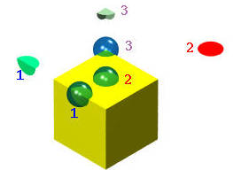
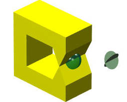

Manifolds #
维基百科：流形（英语：manifold）是可以“局部欧几里得空间化”的一个拓扑空间，即在此拓扑空间中，每个点附近“局部类似于欧氏空间”。更精确地说，n维流形（n-manifold），简称n流形。
天圆地方：地球虽然是圆的，但是在某一个很小的区域内，可以近似的将这个区域内地球的表面看作是一个二维的欧氏空间，所以地球满足二维流形。
几何建模中，为了满足各种几何操作，几何实体（solid）必须满足这样一个条件：几何体的表面（surface）必须是一个二维流形（2-manifold）。
现在有研究表明，几何体的表面不一定需要满足上述条件。但是为了建模的方便以及满足现有的各种几何算法，一般还是会限制几何体满足上述条件。所以我们将讨论何为 2-manifold。
二维流形（2-manifold） #
在几何体的表面（surface）上的任意一点 x 添加一个半径足够小的球体，该球体的中心点为 x。该球体与几何体表面相交，如果相交的面，能够展开（扭曲，变形）成为一个圆盘（圆形），则该几何体就满足二维流形条件。
例如下图中的正方体，我们分别在正方体的三个不同的地方添加一个半径足够小的球体，第一个球体的中心点为正方体 edge 的中点处，第二个球体的中心点在正方体顶面的中点处，第三个球体的中心点在正方体的一个顶点处。这三个球体与正方体相交的表面，均能够展开（扭曲，变形）成为一个圆盘。你也可以试试在正方体的任意一点，添加一个足够小的球体，看看是否都满足球体与正方体表面相交的部分能够展开（扭曲，变形）成为一个完整的圆盘。

所以正方体是满足二维流形的。
再来看一个不满足二维流形的体。

上图中的体，与球相交的面为两个相交的圆盘，无论怎么展开（扭曲，变形）都无法成为一个圆盘，所以图中的体，不满足二维流形（2-manifold）。
很多几何算法只对满足二维流形的体有效，如果体不满足二维流形，建模就会失败，所以这也是为什么这里会介绍这个概念。
（完）